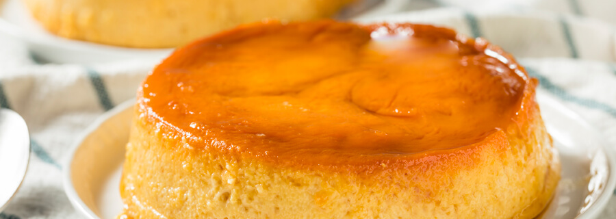

Leche Asada
La leche asada, tradicional dulce chileno de textura suave y ligera que combina caramelo con flan suave, suculento y esponjoso, caracterizado por su preparación fácil, que sin dudades te dejará con ganas de más.
- Ingredientes
- 4 huevos
- 1 litro de leche
- 8 cucharadas grandes (cuchara de sopa) de azúcar, se puede echar más o menos según el gusto de cada uno
- Pasos
- En una fuente metálica colocar 4 cucharadas de azúcar y ponerlo a fuego medio-bajo para hacer el caramelo
- Una vez que comience a derretirse, revolver
- Repetir el paso 2 hasta que toda la azúcar este derretida
- Cuando el caramelo este dorado oscuro, quitar del fuego y dejar enfriar
- Precalentar horno a 180°C
- Ahora en dos fuentes dejar las yemas separadas de las claras. Una fuente grande para las claras y otra chica para
las yemas.
- Utilizar una batidora a velocidad media-alta en las claras hasta que al levantarla queden dos puntas firmes
- De a una, ir echando 4 cucharadas de azúcar, revolviendo con la batidora cada vez para incorporar bien el azúcar
- Batir las yemas con un poco del merengue
- Una vez bien mezclado, utilizar un mezquino o cuchara si no se tiene uno, añadir lentamente e ir incorporando las
yemas al merengue
- Terminada la incorporación, agregar lentamente la leche a la mezcla hasta que se incorporen
- Depositar todo en la fuente del caramelo
- Colocar la fuente en el horno por 20 minutos hasta que se haya formado una capa, si le falta dejarlo más tiempo en
el horno
- Finalmente dejar enfriar hasta que se puede colocar en el refrigerador
- ¡Está listo! ¡Buen provecho!
